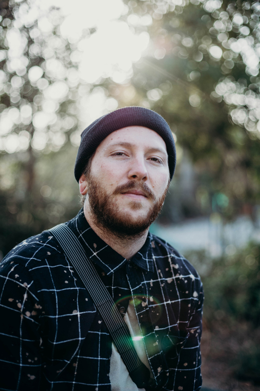

About Me
Hi, I’m Jake Kraus—A Creator Passionate About Telling Your Story." Based in Southern California, I’ve always had a deep connection to art. I’m an avid photographer, videographer, and graphic & UI/UX designer, with a passion for hyper-realistic portraiture oil painting. I’m driven by the desire to capture moments, design meaningful visual identities, and bring stories to life in ways that connect with people. Whether it’s freezing a moment in time, creating a brand’s identity, or painting a personal portrait, I focus on crafting work that truly resonates with you and your vision. When I’m not creating, you’ll find me with my family, who are at the heart of everything I do. Let’s work together to bring your story to life.
